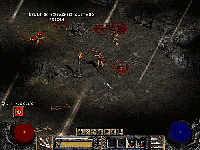

Diablo II
Dieser Artikel wurde für die folgenden Ubuntu-Versionen getestet:
Ubuntu 14.04 Trusty Tahr
Zum Verständnis dieses Artikels sind folgende Seiten hilfreich:
Diablo II  ist ein Spiel aus der gleichnamigen Serie von Blizzard Entertainment und eines der populärsten Online-Spiele geworden. Das im Jahre 2000 veröffentlichte Spiel lässt sich als Action-Rollenspiele oder auch Hack-&-Slay-Spiele einordnen und bietet gut ausgewogene Charakterklassen und eine sehr hohe Vielfalt an Gegenständen, welche selbst fortgeschrittenen Spielern noch viel Raum für Verbesserung lässt. Außerdem ist ein Erweiterungs-Set "Lord of Destruction" erhältlich. Zum Spielen wird ein kostenloser Battle.net-Zugang verwendet.
ist ein Spiel aus der gleichnamigen Serie von Blizzard Entertainment und eines der populärsten Online-Spiele geworden. Das im Jahre 2000 veröffentlichte Spiel lässt sich als Action-Rollenspiele oder auch Hack-&-Slay-Spiele einordnen und bietet gut ausgewogene Charakterklassen und eine sehr hohe Vielfalt an Gegenständen, welche selbst fortgeschrittenen Spielern noch viel Raum für Verbesserung lässt. Außerdem ist ein Erweiterungs-Set "Lord of Destruction" erhältlich. Zum Spielen wird ein kostenloser Battle.net-Zugang verwendet.
Installation¶
Die Installation verläuft ganz normal mit Wine oder PlayOnLinux wie auch unter Windows. Sofern man seinen CD-Key bei Blizzard registriert hat, bekommt man auch die Möglichkeit, eine Installationsroutine herunterzuladen, die man mit Wine starten kann. Diese Installationsroutine lädt dann die entsprechenden Spieldateien auf die Festplatte.
Problembehebung¶
Installation friert ein¶
Unter Umständen kommt man bei der Installation nur bis zur Eingabe des CD-Keys, dann bleibt die Fortschrittsanzeige aber hängen. In diesem Fall hilft es, mit winecfg unter "Grafik" einen emulierten Desktop von z.B. 800x600 Pixel einzustellen und die Installation erneut zu starten. Durch diesen emulierten Desktop wird der vorher verborgene CD-Wechseldialog (Diablo2 fragt direkt am Anfang nach der Spiel-CD) angezeigt. Nach der Installation kann dieser emulierte Desktop wieder abgeschaltet werden.
Keine Soundausgabe¶
Falls keine Soundausgabe vorhanden ist, sollte man winecfg aufrufen und dort im Reiter "Sound" den Sound-Treiber ALSA auswählen. Falls der Sound danach immer noch nicht funktioniert, muss man noch zusätzlich "Soundtreiber emulieren" aktivieren.
Absturz im Battle.net¶
Es kann vorkommen, dass man immer nach ca. 30 Sekunden aus einem Battle.net-Spiel fliegt. Dann sollte man überprüfen, ob die richtigen Rechte gesetzt sind:
cd "~/.wine/drive_c/Programme" sudo chown -R $USER "Diablo II"
Grafikeinstellungen¶
Die Grafikeinstellungen verändert man, indem man im Diablo II-Ordner die Datei D2VidTst.exe mit Wine ausführt [1]. Diese .exe ist allerdings leider nicht mehr vorhanden sofern man das Spiel über die Blizzard-Installationsroutine installiert hat.
Generell gilt, dass der DirectDraw(2D)-Modus mit Wine geht. Den Direct3D-Modus kann man auch ausprobieren, mit Wine aus den Ubuntu-Quellen geht es aber nicht.
Experten-Info:
Für eine bessere Optik kann auch ein GLIDE-Wrapper verwenden werden, den man hier oder hier findet.
Man erreicht durch den Wrapper eine deutlich höhere Frame-Zahl und die Möglichkeit Diablo II auch ohne Direct3D in 3D zu spielen. Nachdem die Dateien ins Diablo-II-Verzeichnis kopiert worden sind muss die D2VidTest.exe ausgeführt werden und der Glide-Wrapper ausgewählt werden.
|  |
| © Blizzard Entertainment |
Spielstart¶
Um Diablo II zu spielen, muss die CD 2 im Laufwerk liegen und Diablo2.exe im Installationsverzeichnis mit Wine ausgeführt werden [1].
Updates¶
Beim Aktualisieren der Spieldateien im Spiel kann es vorkommen, dass dies nicht über das Battlenet geht, weil z.B. keine Verbindung zustande kommt. In dem Fall muss man sich den Patch 1.14c extra herunterladen (möglicherweise muss man im FTP-Ordner nachschauen), entpacken [3] und installieren [2]. Mit dem Patch 1.12 wurde die CD-Abfrage deaktiviert, man kann Diablo II (LoD) damit also ohne eingelegte CD spielen, sofern man sich die .mpq-Dateien von den CDs ins Diablo II-Verzeichnis kopiert hat.
Tipps¶
Die Alt -Taste und linke Maustaste benutzt man in Diablo um besser Gegenstände aufzuheben. Diese Kombination ist aber im Gnome-Desktop schon vergeben um Fenster zu verschieben. Damit keine Konflikte auftreten, wird empfohlen, entweder in Diablo II die Taste umzulegen oder im GNOME-Desktop unter "System -> Einstellungen -> Fenster" den Button "Super("Windows-Taste")" auszuwählen. So kann man im GNOME-Desktop die Fenster mit der Windows -Taste verschieben.
Um die Framerate anzeigen zulassen, im Spiel einfach ⏎ drücken und dann /fps ein tippen und wieder mit ⏎ bestätigen.
Infobox¶
| Diablo II | |
| Originaltitel: | Diablo II |
| Genre: | Action-Rollenspiel, Hack & Slay |
| Sprache: | |
| Veröffentlichung: | 2000 |
| Publisher: | Blizzard Entertainment |
| Systemvoraussetzungen: | 233 MHz, 32 MB RAM, 650 MB Festplattenspeicher, DirectX-kompatible Grafikkarte; |
| Medien: | CD (3) |
| Läuft mit: | Wine |
- Erstellt mit Inyoka
-
 2004 – 2017 ubuntuusers.de • Einige Rechte vorbehalten
2004 – 2017 ubuntuusers.de • Einige Rechte vorbehalten
Lizenz • Kontakt • Datenschutz • Impressum • Serverstatus -
Serverhousing gespendet von